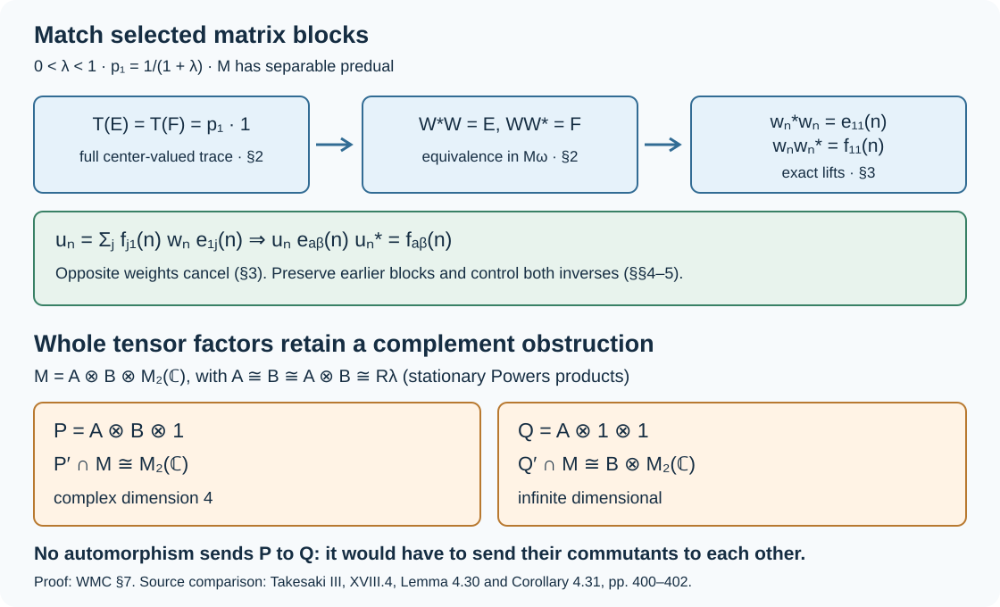

Matching weighted matrix units by approximately inner maps
Two asymptotically weighted matrix systems can be matched on a common subsequence by one approximately inner automorphism. The proof compares projections in a finite central sequence algebra, lifts the comparison, and cancels the two opposite weights in an exact unitary. We also explain why conjugacy of entire tensor factors requires information about their complements.
The human source for comparison is M. Takesaki, Theory of Operator Algebras III, XVIII.4, Lemma 4.30 and Corollary 4.31, printed pages 400–402. The complementary hypothesis in XVII.2, Theorem 2.5, printed pages 264–265, is relevant to the correction below. The exposition and figure here are original; the source text is not reproduced. Every invoked mathematical input has a named earlier programme proof. Independent review and full recursive prerequisite certification remain open.
1. The weighted matching problem
Fix a factor \(M\) with separable predual and a number \(0<\lambda<1\). Set
\[ p_1=\frac1{1+\lambda},\qquad p_2=\frac\lambda{1+\lambda}, \qquad c_{ij}=\frac{p_i}{p_j}=\lambda^{i-j}. \tag{WMC.1} \]Our module conventions are \((x\psi)(z)=\psi(zx)\) and \((\psi x)(z)=\psi(xz)\). For each positive integer \(k\), let \((e_{ij}(k))_{i,j=1}^2\) and \((f_{ij}(k))_{i,j=1}^2\) be full unital matrix units in \(M\). The different \(e\)-blocks commute with one another, and the different \(f\)-blocks commute with one another. No commutation between the two families is assumed. Suppose, for every \(\psi\in M_*\),
\[ \|\psi e_{ij}(k)-c_{ij}e_{ij}(k)\psi\|\longrightarrow0, \qquad \|\psi f_{ij}(k)-c_{ij}f_{ij}(k)\psi\|\longrightarrow0. \tag{WMC.2} \]Matching theorem. There are increasing integers \(k_n\) and a normal automorphism \(\alpha\) of \(M\), in the point-norm predual closure of its inner automorphisms, such that
\[ \alpha(e_{ij}(k_n))=f_{ij}(k_n)\qquad(n\ge1,\ i,j=1,2). \tag{WMC.3} \]The closure refers to \(\|\psi\circ\alpha_m-\psi\circ\alpha\|\to0\) for every normal functional. We will also control the inverses explicitly.
We first make a preliminary common extraction. Choose normal states \(\psi_j\) whose complex span is norm dense in \(M_*\). Such a countable family follows from separability and the positive vector-series decomposition in Every tensor vector is a summable vector series through The concrete predual and its intrinsic norm. At step \(n\), make all defects in (WMC.2), for \(j\le n\) and both families, smaller than \(2^{-n}\). For every fixed \(j\) they are then summable along the extracted sequence. Relabel only for this preliminary argument; the final indices will be restored to the original sequence.
The complete splitting construction in 1. Faithful weighted matrix expectations through 6. Summable modular defects and constant products gives
\[ M=P\,\overline\otimes\,P^c =Q\,\overline\otimes\,Q^c, \qquad P^c=P'\cap M,\quad Q^c=Q'\cap M, \tag{WMC.4} \]where the selected \(e\)-blocks generate \(P\) and the selected \(f\)-blocks generate \(Q\). Both are the stationary Powers factor \(R_\lambda\) with diagonal weights \((p_1,p_2)\). Here is the sign check in applying that construction: TS-06 uses a matrix unit \(u=d_{12}\) with defect \(\psi u-\lambda u\psi\) and density proportional to \((\lambda,1)\). Take \(d_{ij}=e_{3-i,3-j}\), so \(u=e_{21}\). In the original order the density is exactly \((1,\lambda)/(1+\lambda)\). Apply the same relabeling to \(f\). TS-06 proves the type \(\mathrm{III}_\lambda\) assertion using its stated earlier product-type proof.
2. Compare the full center-valued traces
Fix a free ultrafilter \(\omega\) on the positive integers. We use the earlier complete proof CSQ, Theorem 3.1: bounded sequences centralizing every normal functional along \(\omega\), modulo bounded strong-star null sequences along \(\omega\), form a finite von Neumann algebra \(M_\omega\). Its faithful normal trace is
\[ \tau_M(\pi_\omega(x_n))=\lim_{n\to\omega}\rho(x_n) \tag{WMC.5} \]for any normal state \(\rho\); the value does not depend on that state. Centralizing means predual norm convergence, not merely strong operator commutation. CSQ Proposition 2.1 supplies both the ideal and the two-square state-norm description of the quotient.
The inclusion \(P\subset P\overline\otimes P^c=M\) induces a unital injective star homomorphism \(\iota_P:P_\omega\to M_\omega\). Indeed, for a product functional \(\psi\otimes\chi\), the commutator with \(x_n\in P\) has norm at most \(\|\chi\|\|\psi x_n-x_n\psi\|\). Finite sums of such functionals are norm dense: approximate both vectors of a coefficient on a tensor Hilbert space by finite sums of elementary tensors, then apply the summable coefficient decomposition of Every tensor vector is a summable vector series through The concrete predual and its intrinsic norm. Uniform boundedness of \(x_n\) extends the conclusion to every normal functional. A faithful normal product state gives identical two-square norms on \(P\) and on its copy in \(M\); thus the null ideals agree on these sequences and the induced map is injective. Formula (WMC.5) makes it trace preserving.
This homomorphism is normal, a point needed below. If \(0\le X_a\uparrow X\) in \(P_\omega\), let \(Y=\sup_a\iota_P(X_a)\le\iota_P(X)\). Normality of the two traces gives
\[ \tau_M(Y)=\sup_a\tau_P(X_a)=\tau_P(X)=\tau_M(\iota_P(X)). \tag{WMC.6} \]Faithfulness makes \(Y=\iota_P(X)\). Preservation of bounded increasing positive suprema is equivalent to ultraweak continuity by the complete positive-map proof The positive-map equivalence. The same argument applies to \(Q\). We only need these normal maps; no claim about a nonnormal trace is involved.
The stationary-product theorem 1. The product and the sequence conventions, 5. Every free-ultrafilter quotient has scalar center through 6. Small projections exclude a finite matrix quotient proves that \(P_\omega\) and \(Q_\omega\) are \(\mathrm{II}_1\) factors. That theorem covers every stationary faithful matrix product, including these Powers products. The diagonal sequences in (WMC.2) are centralizing. Write
\[ E=\pi_\omega(e_{11}(n)),\qquad F=\pi_\omega(f_{11}(n)). \tag{WMC.7} \]Their traces in their own factor quotients are both \(p_1\), by the product state in (WMC.4).
The ambient finite algebra \(N=M_\omega\) need not be a factor. Its normal normalized center-valued trace \(T:N\to Z(N)\) is constructed in construction of the center-valued trace (FCT6). For every normal state \(\zeta\) on \(Z(N)\), the map \(\zeta\circ T\circ\iota_P\) is a normal normalized scalar trace on the factor \(P_\omega\). Normal trace uniqueness in normal trace uniqueness and comparison (FCT7) identifies it with \(\tau_P\). Normal states separate the center, by CP-06; therefore
\[ T(E)=p_1 1=T(F). \tag{WMC.8} \]FCT-07's projection comparison now gives a partial isometry \(W\in N\) with \(W^*W=E\) and \(WW^*=F\). Equality of one scalar trace in the possibly nonfactor algebra \(N\) would not suffice.
3. Exact lifts and cancellation of opposite weights
At every coordinate the endpoints \(e_{11}(n)\) and \(f_{11}(n)\) are equivalent inside \(M\). Each is nonzero in its countably decomposable type III factor \(P\) or \(Q\), respectively, so each is equivalent to the common identity by countable projection comparison (PC7). Separability supplies a faithful normal state; its finite mass makes every orthogonal family of nonzero projections countable. Type III makes every nonzero projection properly infinite, so the hypotheses of PC-07 apply.
The exact endpoint lifting theorem CSQ, Theorem 5.1 consequently gives a bounded centralizing sequence along \(\omega\) of partial isometries \(w_n\) representing \(W\), with
\[ w_n^*w_n=e_{11}(n),\qquad w_nw_n^*=f_{11}(n). \tag{WMC.9} \]Define
\[ u_n=\sum_{j=1}^2 f_{j1}(n)w_ne_{1j}(n). \tag{WMC.10} \]All factors in each summand are contractions. Matrix multiplication and (WMC.9) give
\[ \begin{aligned} u_n^*u_n&=\sum_j e_{jj}(n)=1,\\ u_nu_n^*&=\sum_j f_{jj}(n)=1,\\ u_ne_{ab}(n)u_n^*&=f_{ab}(n). \end{aligned} \tag{WMC.11} \]For example, the \((j,l)\) term of \(u_n^*u_n\) vanishes unless \(j=l\), when it is \(e_{j1}w_n^*f_{11}w_ne_{1j}=e_{jj}\); the other identities follow by the same displayed matrix relations.
Although \(f_{j1}\) and \(e_{1j}\) individually have nontrivial weights, their product with \(w_n\) is centralizing. Suppress \(n\), put \(c_j=p_j/p_1\), and expand the functional difference exactly:
\[ \begin{aligned} \psi(f_{j1}we_{1j})-(f_{j1}we_{1j})\psi &= (\psi f_{j1}-c_j f_{j1}\psi)we_{1j}\\ &\quad+c_j f_{j1}(\psi w-w\psi)e_{1j}\\ &\quad+c_j f_{j1}w(\psi e_{1j}-c_j^{-1}e_{1j}\psi). \end{aligned} \tag{WMC.12} \]Taking norms and summing over \(j\) bounds \(\|\psi u_n-u_n\psi\|\) by the three defects on the right, with coefficients \(1,c_j,c_j\). The first and last vanish ordinarily by (WMC.2); the middle vanishes along \(\omega\). Thus \((u_n)\) is centralizing along \(\omega\) and matches the blocks exactly.
We have in particular proved this finite precision selection principle: for any finite set \(\mathcal F\subset M_*\), any \(\varepsilon>0\), and any index cutoff, there is a later original index \(k\) and a unitary \(u\in M\) matching its two blocks with
\[ \|\psi u-u\psi\|<\varepsilon\qquad(\psi\in\mathcal F). \tag{WMC.13} \]Choose a coordinate in the finite intersection of the corresponding members of \(\omega\) and a cofinite index set. The preliminary extraction is increasing, so this is also beyond the original cutoff. No countable intersection of ultrafilter sets is taken.
4. Preserve old matches in a relative commutant
Suppose \(k_1<\cdots<k_{n-1}\) and a unitary \(V\) already satisfy \(Ve_{ij}(k_v)V^*=f_{ij}(k_v)\) for \(v<n\). The target blocks generate a unital full matrix algebra
\[ D=\bigvee_{v<n}\{f_{ij}(k_v)\}\cong M_{2^{n-1}}(\mathbb C), \qquad L=D'\cap M,\qquad M=D\overline\otimes L. \tag{WMC.14} \]The finite matrix-coordinate isomorphism and a normal conditional expectation onto \(L\) were proved in 1. Faithful weighted matrix expectations. The tensor representation shows \(Z(L)=\mathbb C\), since a central element of \(L\) commutes with both factors and hence with \(M\). Restriction from \(M_*\) to \(L_*\) is onto, using the expectation to extend functionals, so \(L_*\) is separable.
For \(k>k_{n-1}\), both \(g_{ij}(k)=Ve_{ij}(k)V^*\) and \(f_{ij}(k)\) lie in \(L\). Fixed inner conjugation preserves (WMC.2): compose a test functional with \(\operatorname{Ad}V\) and use its isometric action on the predual. Restriction gives the weighted defects for all normal functionals on \(L\), using the normal extensions through the expectation. Thus Sections 1–3 apply inside this relative commutant.
Their selected centralizing unitaries also centralize every test from \(M_*\) along the same ultrafilter. To see this without identifying operator centrality with predual centrality, expand a functional on \(D\overline\otimes L\) in its finitely many matrix coefficients on \(D\). Its commutator with \(1\otimes u\) is a finite sum of the corresponding commutators on \(L\). Hence the selection in (WMC.13) can impose any finite list of tests from \(M_*\). The chosen unitary is in \(L\), so it fixes all old target blocks exactly. This permits successive exact matches without undoing earlier ones.
5. A two-sided limit is an automorphism
Fix normal states \(\psi_j\) with norm-dense complex span. Set \(V_0=1\). At stage \(n\), use Section 4 with \(V=V_{n-1}\), and impose (WMC.13), with error \(2^{-n}\), on
\[ \{\psi_j,\ \psi_j\circ\operatorname{Ad}(V_{n-1}^*):1\le j\le n\}. \tag{WMC.15} \]Choose \(k_n>k_{n-1}\), the resulting \(u_n\in L\), and set \(V_n=u_nV_{n-1}\), \(\sigma_n=\operatorname{Ad}V_n\). All matches through stage \(n\) hold. For a unitary \(u\), composition and multiplication by \(u\) identify the norm of \(\psi\circ\operatorname{Ad}u-\psi\) with \(\|\psi u-u\psi\|\); the analogous norm for \(u^*\) is equal to it. Thus, for \(j\le n\),
\[ \begin{aligned} \|\psi_j\circ\sigma_n-\psi_j\circ\sigma_{n-1}\|&<2^{-n},\\ \|\psi_j\circ\sigma_n^{-1}-\psi_j\circ\sigma_{n-1}^{-1}\|&<2^{-n}. \end{aligned} \tag{WMC.16} \]The second test in (WMC.15) is needed for the second inequality.
Here is the complete limit argument. On \(M_*\), put \(S_n\psi=\psi\circ\sigma_n\), \(T_n\psi=\psi\circ\sigma_n^{-1}\). Summability, density, and their common norm bound one give point-norm limits \(S,T\) on every functional. These limits are linear isometries. For instance,
\[ \|S_nT_n\psi-ST\psi\| \le\|T_n\psi-T\psi\|+\|(S_n-S)T\psi\|\longrightarrow0. \tag{WMC.17} \]Since \(S_nT_n=T_nS_n=1\), this proves \(ST=TS=1\). Their adjoints \(\alpha=S^*\), \(\beta=T^*\) on \(M=(M_*)^*\), as established in The concrete predual and its intrinsic norm, are normal inverse linear maps. They are unital and completely positive: every finite matrix amplification is a pointwise ultraweak limit of the corresponding positive amplifications of the automorphisms, and the positive cone is ultraweakly closed, as testing vector coefficients shows.
For completeness, a unital completely positive map \(A\) satisfies \(A(x)^*A(x)\le A(x^*x)\): apply its second amplification to the positive matrix with entries \(x^*x,x^*,x,1\), and evaluate on vectors \((\xi,-A(x)\xi)\). Apply this inequality first to \(\alpha\), then to \(\beta\), to obtain
\[ x^*x\le\beta(\alpha(x)^*\alpha(x))\le x^*x. \tag{WMC.18} \]Injectivity of \(\beta\) makes equality hold in the Schwarz inequality for \(\alpha\). Polarization gives \(\alpha(x^*y)=\alpha(x)^*\alpha(y)\), and positive maps preserve adjoints. Hence \(\alpha\) is a normal star automorphism. It is approximately inner by its construction as the predual point-norm limit of \(\sigma_n\). For fixed \(v\), all \(\sigma_n\), \(n\ge v\), have the exact prescribed value on \(e_{ij}(k_v)\); passing to the ultraweak limit proves (WMC.3). This completes the matching theorem. A one-sided Cauchy sequence alone would not have proved surjectivity.
6. Move a whole product into a subsequence using a reserve
Let \(P\cong R_\lambda\), with its full stationary sequence of generating matrix blocks, and let \(P_K\) be generated by an infinite subset \(K\) of these blocks. Suppose its ambient complement contains a second copy \(P_2\cong R_\lambda\) as a tensor factor. Thus
\[ M=P\overline\otimes P_2\overline\otimes S. \tag{WMC.19} \]There is an approximately inner automorphism \(a\) of \(M\) taking \(P\) onto \(P_K\).
Indeed, label the identical product legs in the first two factors by \(I=\mathbb N\times\{0,1\}\), and let \(A=\mathbb N\times\{0\}\). Regard \(K\) as a subset of \(A\). There is a permutation \(\pi\) of \(I\) sending \(A\) onto \(K\): choose bijections on those two countably infinite sets and on their countably infinite complements. The latter complements remain infinite even if \(K=A\), because of the second factor. Permuting finite-support pointed tensor vectors preserves their inner products, since all reference states agree. It therefore extends to a unitary and gives a normal state-preserving automorphism \(a_0\) of \(P\overline\otimes P_2\), taking the product over \(A\) to the product over \(K\). This is the explicit tensor identification used in 5. The actual infinite product and its center.
Choose finite sets \(F_n\uparrow I\). A finitely supported permutation \(\pi_n\) can agree with \(\pi\) and have inverse agreeing with \(\pi^{-1}\) on \(F_n\): prescribe \(\pi\) on \(F_n\cup\pi^{-1}(F_n)\), take a finite set containing the prescribed domain and range, and biject its unused domain points to its unused range points. The numbers of unused points agree. Extend by the identity outside this finite set. The induced automorphism \(a_n\) is inner, implemented by the finite tensor permutation unitary in the full matrix algebra of its support.
Let \(\rho\) be the stationary product state, and define \(\rho_{b,c}(x)=\rho(c^*xb)\) for local tensors \(b,c\). State preservation gives
\[ \rho_{b,c}\circ a_n =\rho_{a_n^{-1}(b),a_n^{-1}(c)}. \tag{WMC.20} \]The right side eventually equals the corresponding expression for \(a_0\). These coefficient functionals have norm-dense span in the predual: local vectors are dense in the pointed product Hilbert space by its construction, and CP-04–06 bounds the functional error by the two vector errors. Thus \(a_n\to a_0\) in predual point norm. Tensoring with the identity on \(S\) preserves this convergence by the product-functional argument in Section 2. It proves the assertion about \(a\).
7. A corrected tensor-factor conjugacy statement
Reserve-factor conjugacy. Suppose
\[ M=P\overline\otimes P^c=Q\overline\otimes Q^c, \qquad P\cong Q\cong R_\lambda, \tag{WMC.21} \]where \(M\) is a factor with separable predual. Assume additionally that
\[ P^c=P_2\overline\otimes S,\qquad Q^c=Q_2\overline\otimes U, \qquad P_2\cong Q_2\cong R_\lambda. \tag{WMC.22} \]Then an approximately inner automorphism of \(M\) takes \(P\) onto \(Q\).
Proof. Transport the stationary generating matrix sequences to \(P,Q\). They satisfy (WMC.2) on \(M_*\). To check this, on a functional consisting of a local coefficient in the product state and a normal functional on the complement, a sufficiently late leg satisfies the weighted identity exactly: its density \(d=\operatorname{diag}(p_1,p_2)\) obeys \(de_{ij}=c_{ij}e_{ij}d\). Such functionals have norm-dense span by the preceding tensor and coefficient arguments. Uniform bounds on the module actions extend convergence to every normal functional.
The matching theorem gives \(\sigma\) with \(\sigma(P_K)=Q_K\) for a common infinite subsequence. Section 6 gives approximately inner \(a,b\) with \(a(P)=P_K\), \(b(Q)=Q_K\). Then \(b^{-1}\sigma a\) takes \(P\) onto \(Q\). Approximately inner automorphisms form a subgroup for this topology: if \(A_n\to A\) are predual isometries and all are invertible isometries, then
\[ \|A_n^{-1}\psi-A^{-1}\psi\| =\|\psi-A_nA^{-1}\psi\|\longrightarrow0; \tag{WMC.23} \]composition is continuous by the two-term estimate used in (WMC.17). Approximating two factors at once on a finite list of functionals proves closure under composition, or one may diagonalize on the countable dense list. Products and inverses of inner automorphisms are inner. This proves the theorem. \(\square\)
The familiar stronger assumption \(P^c\cong M\cong Q^c\) implies (WMC.22): transport the factorization \(M=P\overline\otimes P^c\) through an isomorphism \(M\to P^c\), and similarly transport the \(Q\) factorization to \(Q^c\). The reserve condition above is sufficient; no necessity claim is made.
Why the unrestricted statement fails. Let \(R_\lambda=A\overline\otimes B\) be its odd/even product decomposition. Both \(A\) and \(B\), and their product, are isomorphic to \(R_\lambda\) by the pointed tensor reindexing just proved. Put
\[ \begin{aligned} M&=A\overline\otimes B\overline\otimes M_2(\mathbb C),\\ P&=A\overline\otimes B\overline\otimes1,\\ P^c&=1\overline\otimes1\overline\otimes M_2(\mathbb C),\\ Q&=A\overline\otimes1\overline\otimes1,\\ Q^c&=1\overline\otimes B\overline\otimes M_2(\mathbb C). \end{aligned} \tag{WMC.24} \]These are proper Powers subfactors of a separable factor, and both give tensor factorizations of \(M\). The commutant identities follow by taking normal slices and using \(Z(A)=Z(B)=\mathbb C\); product functionals separate tensor elements by CP-06. An ambient automorphism taking \(P\) to \(Q\) would take \(P'\cap M\) onto \(Q'\cap M\), by applying the automorphism and its inverse to commutation relations. But the first has complex vector-space dimension four and the second is infinite dimensional, containing all matrix heads of \(B\). They cannot be isomorphic. Hence there is no such automorphism at all.
Corollary 4.31 on printed page 402 states the tensor-factor conjugacy claim without a complement condition. Read with only those stated hypotheses, it has the counterexample (WMC.24). The analogous earlier Theorem XVII.2.5 explicitly requires the complements to be isomorphic to the ambient factor. We retain the valid matching lemma and prove the sufficient corrected statement (WMC.22), rather than assigning proof credit to the unrestricted corollary.
8. Mechanism and worked checks

Figure. The upper chain is proved in Sections 2–5: comparison uses the whole center-valued trace, exact lifts have the stated endpoints, and opposite weights cancel in the displayed unitary. The lower panel is the exact counterexample in Section 7. Its two commutants have different vector-space dimensions. The figure is a reproducible SVG; the proofs retain all hypotheses and the two-sided convergence argument.
- A concrete weight. For \(\lambda=1/2\), the diagonal weights are \((2/3,1/3)\). The factor for \(e_{12}\) is two, while that for \(f_{21}\) is one half. The \(j=2\) term in (WMC.12) has coefficients \(1,1/2,1/2\); its last weighted defect is \(\psi e_{12}-2e_{12}\psi\). The cancellation returns an unweighted commutator.
- Why one scalar trace is insufficient. In \(\mathbb C\oplus\mathbb C\) with the equal-weight trace, \((1,0)\) and \((0,1)\) have trace one half, but no partial isometry has these initial and final projections: multiplication is coordinatewise, so \(w^*w=ww^*\). Section 2 proves equality of their analogues in the center itself.
- What the reserve supplies. Even when the chosen subsequence omits infinitely many original legs, a permutation of the original coordinate set alone cannot send the whole set onto a proper subset. The second product makes both complements in Section 6 countably infinite, permitting an actual bijection of all coordinates.
- What remains beyond this lemma. The approximately inner matching theorem and the corrected tensor-factor conjugacy theorem are proved here. The full automorphism classification in XVIII.4 Theorem 4.29 is a separate subsequent obligation. Neither this lesson nor the coverage inventory certifies that classification, the whole course, or all recursive prerequisites.
Original lesson and illustration: CC0-1.0 to the extent of rights held. The cited source book and earlier authors' works retain their own rights.